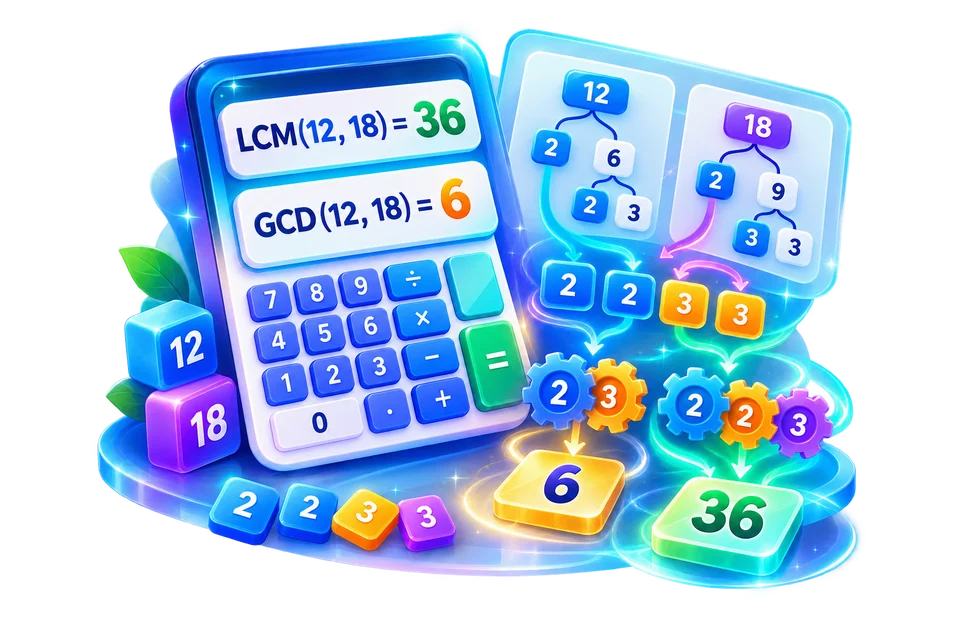

Enter the integers being compared
Find the GCD of 18 and 24 to simplify 18/24 to 3/4.
Find greatest common divisor and least common multiple.
GCD finds the greatest shared factor; LCM finds the smallest shared multiple.

Find the GCD of 18 and 24 to simplify 18/24 to 3/4.
Find a common schedule interval or simplify a fraction.
GCD and LCM answer different divisibility questions.
Find the GCD of 18 and 24 to simplify 18/24 to 3/4.
For 12 and 18, the GCD is 6 while the LCM is 36. Use 6 to split objects into the largest equal groups; use 36 to find the first common repeat interval.
Use the real tool above to verify the result. The example illustrates the workflow, not a guaranteed outcome.
For 12 and 18, the GCD is 6 while the LCM is 36. Use 6 to split objects into the largest equal groups; use 36 to find the first common repeat interval.
The two operations answer different questions. Ensure the inputs are integers and consider how zero or negative values are treated.

GCD finds the greatest shared factor; LCM finds the smallest shared multiple.
GCD finds the greatest shared factor; LCM finds the smallest shared multiple.
Find the GCD of 18 and 24 to simplify 18/24 to 3/4.
For 12 and 18, the GCD is 6 while the LCM is 36. Use 6 to split objects into the largest equal groups; use 36 to find the first common repeat interval.
The greatest common divisor, or GCD, is the largest positive whole number that divides each supplied nonzero integer exactly. For 24 and 36, it is 12 because both are divisible by 12 and neither shares a larger divisor. Imagine placing 24 red and 36 blue tiles into identical packs without leftovers: at most 12 such packs are possible, containing two red and three blue tiles each. That question differs from the least common multiple, which identifies when cycles or counts can align.
The Euclidean algorithm is a fast manual check. Divide the larger number by the smaller and keep the remainder: 36 = 24×1 + 12, then 24 = 12×2 + 0. The last nonzero remainder is 12. For several integers, calculate the GCD of the first two and then combine it with the next. Zero needs careful interpretation: GCD(0, n) is usually |n| for nonzero n, while GCD(0,0) has no universally useful positive value.
The least common multiple, or LCM, is the smallest positive whole number that is a multiple of all chosen nonzero numbers. If one event repeats every 6 minutes and another every 8 minutes, the next simultaneous repetition after a common start occurs after LCM(6,8)=24 minutes. It is not the same as adding the intervals to get 14. For two positive integers a and b, LCM(a,b) × GCD(a,b) = a×b, which provides a useful cross-check when neither value is enormous.
Prime factorization gives a second verification route. For 12 = 2²×3 and 18 = 2×3², the GCD takes the minimum power of each shared prime: 2×3=6. The LCM takes the maximum powers: 2²×3²=36. Their product 216 equals 12×18. For large numbers, avoid relying on floating-point representations that cannot exactly store every integer. Read any rounding warning and check the input accepts whole numbers rather than decimals.
Use GCD when dividing material into equal-size pieces without leftovers, simplifying fractions or finding a common factor. Use LCM for repeating schedules, matching periodic patterns or finding a shared denominator. The distinction prevents errors such as selecting GCD to coordinate bus intervals, which would give a divisor rather than the time until schedules align. Negative input signs do not usually change the positive GCD/LCM of magnitudes; verify the tool's treatment if a value is zero or negative.
For intervals of 4, 6 and 9 minutes, LCM(4,6)=12 and then LCM(12,9)=36 minutes. Repeated application to pairs is a practical method for more than two values. But repeating events meet after 36 minutes only if they started together. If one begins three minutes later, the shared interval does not directly predict the next meeting; the starting offsets form another constraint. Similarly, GCD of 18, 24 and 30 is 6. Writing down all inputs is essential because accidentally omitting just one changes the answer without producing any visible calculation error.
Suppose a maintenance team checks one machine every 12 days and another every 18 days. Their next simultaneous inspection interval is the least common multiple, 36 days. A greatest common divisor solves another problem: the largest identical group that divides 12 and 18 is 6. Both operations use divisibility but answer different questions. For positive integers a and b, a useful cross-check is GCD(a,b) × LCM(a,b) = a × b. Check how the tool interprets zero or negative entries before using special cases; many educational examples assume strictly positive whole numbers. Never substitute LCM for GCD when distributing items into equal-sized groups.
Use LCM to find a shared recurrence interval; use GCD to find the largest exact common factor.
No. For positive integers, a common multiple must be at least as large as each input.
Use LCM to find a shared recurrence interval; use GCD to find the largest exact common factor.
No. For positive integers, a common multiple must be at least as large as each input.
Yes. Their greatest common divisor is one, so their LCM is the product for positive integers.
LCM and GCD are conventionally defined for integers. Decimal approximations may not represent an exact divisibility problem.